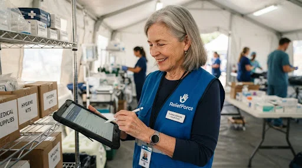

Your Hands,
Our Mission.
Become the calm within the storm. Stackly connects specialized skills with critical needs during global crises. Join a network of over 10,000 certified responders.

Current Needs
Find where your expertise matches our immediate operational gaps.
Emergency Field Medic
Immediate deployment for flood relief in Southeast Asia. Requires valid Paramedic or RN certification and 2+ years emergency experience.
Supply Chain Analyst
Optimize inventory management for local distribution hubs. Remote-friendly role focused on predictive resource allocation.
Crisis Linguist
Multilingual support for displaced families. Fluency in Arabic, French, or Spanish required to bridge communication gaps.
Start Your Journey
Our vetting process ensures safety and efficiency in high-stakes environments. Complete this first step to access the portal.
Responder Roadmap
From enthusiast to certified expert. We provide the curriculum; you provide the commitment.
Core Theory
Online foundations of disaster relief, logistics, and organizational ethics.
Medical 101
Advanced first aid certification and trauma management workshops.
Field Safety
On-site survival training, satellite comms, and local cultural intelligence.
Certification
Final field simulation and official Stackly Response ID issuance.

"Efficiency saves lives as much as expertise does."
Meet Sarah Mitchell, a logistics specialist who has been with Stackly for 8 years. From earthquake response in Nepal to pandemic support in London, Sarah ensures our ground teams never run out of supplies.
"The training here is rigorous, but it gives you the confidence to lead when everything else is falling apart."
Deployment Timeline
What to expect from the moment you get the "Go" signal.
Your Safety is Our Mandate
Comprehensive Insurance
Full health and life coverage for all registered volunteers during deployment.
Psychological Support
Access to crisis counseling and debriefing sessions after every mission.
24/7 Field Support
Continuous satellite monitoring and emergency extraction protocols for every team.
Never Respond Alone
Join our private community forum to share experiences, ask veteran responders questions, and find your future teammates.